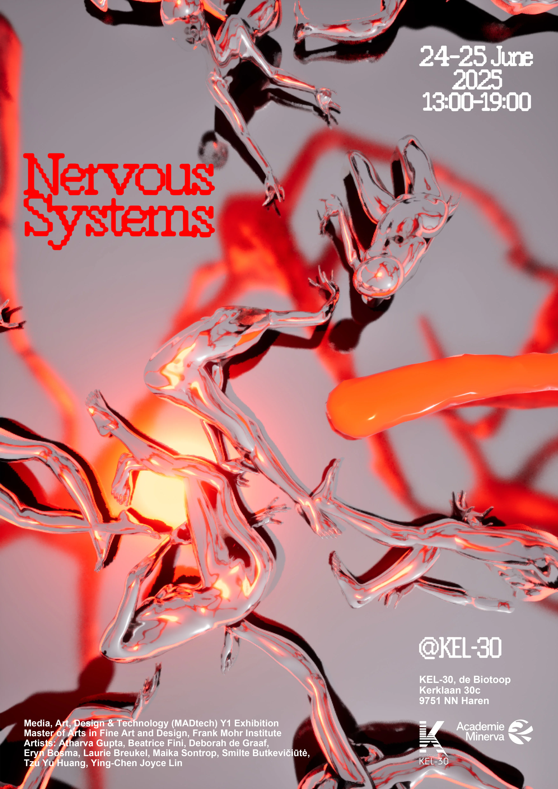

Nervous Systems
Kinetic Sculpture
Group show on perception and reactive environments. Rain Reminders (Instruments for Becoming) installed as a motor-driven, audience-responsive kinetic work.

Kinetic Sculpture
Group show on perception and reactive environments. Rain Reminders (Instruments for Becoming) installed as a motor-driven, audience-responsive kinetic work.
